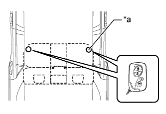

ENTRY AND START SYSTEM (for Entry Function) > All Door Entry Lock/Unlock Functions do not Operate, but Wireless Functions Operate |
| 1.READ VALUE USING INTELLIGENT TESTER (KEY CANCEL SWITCH) |
Using the intelligent tester, read the Data List (Click here).
| Tester Display | Measurement Item/Range | Normal Condition | Diagnostic Note |
| Auto Entry Cancel SW | Entry cancel function setting / OFF or ON | Mode status displayed ON: entry and start system canceled OFF: entry and start system not canceled | The default setting for the entry cancel function is OFF. If the customer requests that the entry and start system functions (locking and unlocking the doors while carrying the key, etc.) be canceled, the setting can be changed through the customize function (Click here). |
| Result | Proceed to |
| Entry door lock function cancel is OFF | A |
| Entry door lock function cancel is ON | B |
|
| ||||
| A | |
| 2.CHECK WAVE ENVIRONMENT |
Move the electrical key transmitter as described below and perform the operation inspection (Click here).
Bring the electrical key transmitter approximately 0.3 m (0.98 ft.) from the front door outside handle assembly LH and perform a driver door entry lock and unlock operation check.
| *a | Approximately 0.3 m (0.98 ft.) |
 |
Bring the electrical key transmitter approximately 0.3 m (0.98 ft.) from the front door outside handle assembly RH and perform a front passenger door entry lock and unlock operation check.
| *a | Approximately 0.3 m (0.98 ft.) |
Bring the electrical key transmitter approximately 0.3 m (0.98 ft.) from the electrical key antenna (outside luggage) and perform an entry back door unlock function check.
| *a | Approximately 0.3 m (0.98 ft.) |
| Result | Proceed to |
| All operation checks fail | A |
| All checks are normal | B |
| Some operation checks are normal | C |
|
| ||||
|
| ||||
| A | |
| Go to step 4 |
| 3.CHECK ELECTRICAL KEY ANTENNAS IN KEY DIAGNOSTIC MODE |
Check the following antennas in the key diagnostic mode (Click here).
Check the electrical key antenna (for driver side):
| *a | 0.7 to 1 m (2.30 to 3.28 ft.) |
|
Check the electrical key antenna (for front passenger side):
| *a | 0.7 to 1 m (2.30 to 3.28 ft.) |
 |
Check the indoor No. 1 electrical key antenna (front floor):
| *a | Inspection Point |
|  |
Check the indoor No. 2 electrical key antenna (rear floor):
| *a | Inspection Point |
 |
Check the indoor No. 3 electrical key antenna (inside luggage):
| *A | w/ Rear No. 2 Seat Assembly |
| *B | w/o Rear No. 2 Seat Assembly |
| *a | Inspection Point |
Check the electrical key antenna (outside luggage):
| *a | 0.7 to 1 m (2.30 to 3.28 ft.) |
| Result | Proceed to |
| All diagnostic mode inspections fail | A |
| Some diagnostic mode inspections fail (door) | B |
| Some diagnostic mode inspections fail (interior) | C |
| Some diagnostic mode inspections fail (back door) | D |
| All diagnostic mode inspections are normal | E |
|
| ||||
|
| ||||
|
| ||||
|
| ||||
| A | |
| 4.INSPECT ELECTRICAL KEY TRANSMITTER |
Check if there is another key available that is already registered to the vehicle.
| Result | Proceed to |
| Another registered key is not available | A |
| Another registered key is available | B |
|
| ||||
| A | |
| 5.REPLACE ELECTRICAL KEY TRANSMITTER |
Replace the electrical key transmitter with a new one.
Perform the registration procedure (Refer to the Service Bulletin).
| NEXT | |
| 6.CHECK OPERATION |
Check the operation of the entry lock function (Click here).
|
| ||||
| OK | ||
| ||